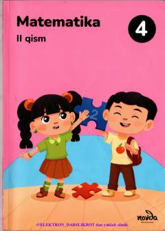

M44-sinf o'quvchilari uchun matematika fani bo'yicha darslikning ikkinchi qismi.
Ushbu darslik umumiy o‘rta ta’lim maktablarining 4-sinf o‘quvchilari uchun matematika fani bo‘yicha tayyorlangan. Kitobda amaliy topshiriqlar, matnli masalalar va mantiqiy mashqlar o‘rin olgan. O‘quvchilarning hisoblash va mantiqiy fikrlash ko‘nikmalarini rivojlantirishga xizmat qiladi.